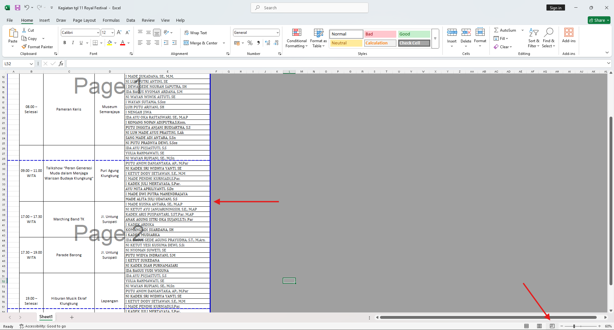
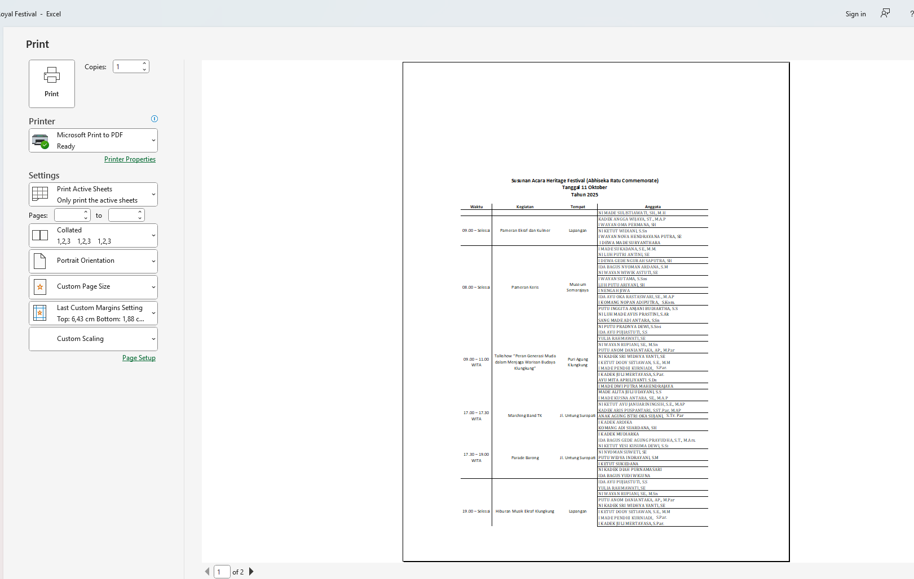
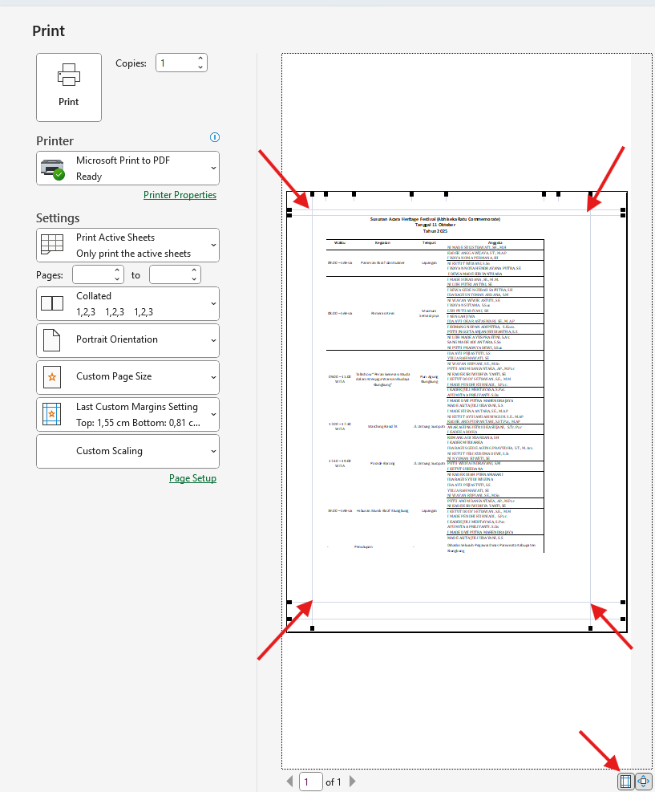

Penjelasan Masalah
Masalah ini terjadi karena saat mencetak atau print preview kita tidak mengatur bagian mana saja yang akan di print, sehingga menyebabkan dokumen terlihat terpotong.
Langkah Penyelesaian
- Saat akan mencetak dokumen di excel alangkah baiknya untuk menggunakan tampilan page break preview Pada pojok kanan bawah halaman 
- Tampilan ini akan memunculkan garis biru sebagai indikator sebuah halaman anda juga dapat mengatur garis ini secara horizontal/vertikal.
- Jika dibuka dalam print dan print preview maka tampilan akan menyesuaikan dengan posisi garis biru 
- Jika tampilan dokumen masih terpotong atur margin, cara yang paling sederhana adalah dengan show margin, kemudian tarik garis yang muncul pada setiap sisi halaman sampai semua halaman terlihat. 
- Namun perlu diperhatikan bahwa margin tidak boleh terlalu kecil, jika dipaksa akan menyebabkan masalah saat proses print.